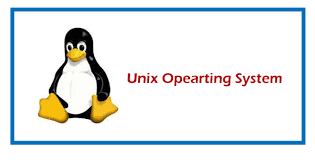
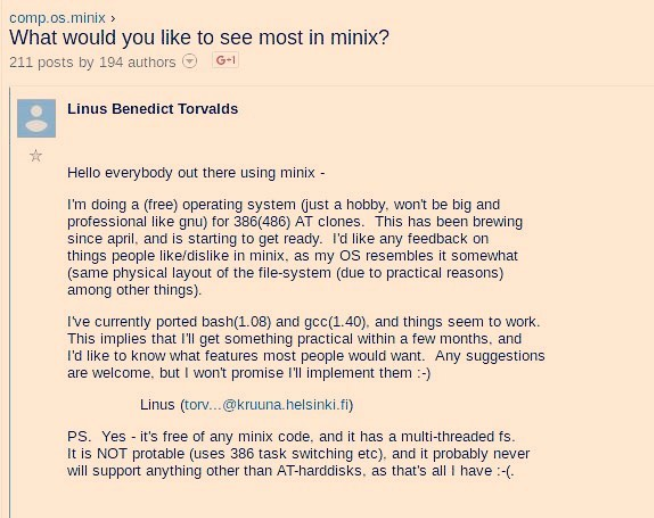
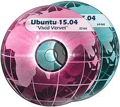
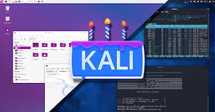
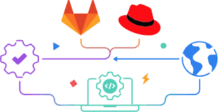

Unix is a powerful and influential operating system that has shaped the computing landscap since its creation in the late 1960s by Ken Thompson, Dennis Ritchie, and others at Bell Labs. Dennis Ritchie, and others at Bell Labs. It's characterized by its design principles that prioritize simplicity, modularity, and a "do one thing and do it well" philosophy. Key aspects of Unix include:
Hierarchical File System: Unix organizes files in a hierarchical directory structure, where everything is treated as a file. Multiuser and Multitasking: Unix was one of the earliest operating systems to suppor
pabilities built-in from the start, enabling seamless communication between computers. Security: Unix emphasizes security, implementing a permission system that controls access to files and resources. Variants of Unix include the original AT&T Unix, BSD (Berkeley Software Distribution), Linux (Unix-like, not Unix itself but heavily inspired by Unix), and others. Linux, while not Unix, is Unix-like and has gained immense popularity due to its open-source nature and flexibility. Unix's influence extends beyond its direct usage; its principles have heavily influenced many other operating systems, including Linux, macOS (which is Unix-based), and even Windows through features like the Windows Subsystem for Linux. Its legacy is vast, and despite the evolution of computing, many of its core concepts and philosophies continue to shape modern operating systems and software development practices.
The GNU kernel still being incomplete and the lack of a widely adopted free kernel to drive his new 80386 processor PC, Computer Science student Linus Torvalds began the work on his own kernel at the age of 25. The first publicly released Linux was version *0.01* in 1991, described as a free minix-like kernel for the intel 386 architecture for personal computers.
Minix (mini Unix) is another Unix-like system, created by Andrew S. Tanenbaum for educational purposes. However, despite the source code being available, it restricted modification and distribution. It was also the operating system that Linus used to create the first release of Linux. *0.01* is considered a historical release today, but at the time it only supported a subset of hardware features, namely: the harddisk, screen, keyboard and serial lines, as well as missing some systemcall implementations such as mount and umount for example. Since it's inception, Linux has made use of the GNU suite of tools to achieve functionality. This led the two projects to grow in tandem as each side seeked to create a fully functional operating system, this time with focus on Linux as the kernel.
Ubuntu is a popular open-source Linux-based operating system. It's known for its ease of use, regular releases, and strong community support. Ubuntu is developed and maintained by Canonical Ltd. and is based on the Debian architecture. Open Source: Ubuntu is free and open-source, meaning its source code is freely available for anyone to modify, distribute, and use. Desktop and Server Versions: Ubuntu offers both desktop and server versions. The desktop version is user-friendly and comes with a graphical interface suitable for personal and office use, while the server version is optimized for server environments and doesn't include a graphical interface by default. Regular Releases: Ubuntu follows a predictable
Ubuntu Variants: Apart from the base version of Ubuntu, there are variants that integrate different desktop environments such as KDE, Xfce, LXQt, and more. These variants are designed to cater to various performance needs, system resources, and user interface preferences. Included Software: Ubuntu comes with a wide range of pre-installed software for immediate use. It includes desktop applications like web browsers, email software, office suites, media players, and more. Software Center: Ubuntu features a built-in software center called the
"Ubuntu Software Center," allowing users to easily browse, install, and update additional applications. Long-Term Support (LTS): Some versions of Ubuntu are marked as LTS. These versions receive long-term support in terms of security updates and stability, which is particularly important for businesses and professional environments. Snap Packages: Ubuntu offers a technology called "Snaps" that enables developers to distribute software as standalone, self-contained packages, independent of the system, with all their dependencies included. This simplifies software installation and maintenance. Community-Driven: Ubuntu's development is backed by a large global community of contributors, developers, and users actively involved in its improvement, issue resolution, and feature creation. Servers and Cloud: Ubuntu is also highly popular for servers, cloud deployments, and virtual machines due to its stability, extensive hardware support, and regular updates.
Kali Linux is a specialized Linux distribution designed primarily for cybersecurity and penetration testing purposes. It's developed and maintained by Offensive Security, a leading organization in the field of information security training and tools. Key features of Kali Linux include:
Penetration Testing Tools: Kali Linux comes pre-installed with numerous penetration testing and ethical hacking tools. These tools are used by cybersecurity professionals and ethical hackers to assess network security, discover vulnerabilities, and test the security of systems and applications. Focused Security Testing: Kali Linux provides a wide array of tools for various security testing purposes, including network scanning, vulnerability assessment, exploitation, forensics, reverse engineering, and more. These tools are categorized and available within the distribution for easy access. Customization and Flexibility: Users have the ability to customize Kali Linux to suit their specific needs, adding or removing tools, configuring the environment, and tailoring it for different security testing scenarios. Security and Updates: Kali Linux emphasizes security by regularly updating its tools and packages to ensure they are up-to-date with the latest security patches and improvements. Community and Support: There's an active community around Kali Linux that provides support, tutorials, and documentation, making it easier for users to get started with security testing and ethical hacking.
Debian est l'une des distributions Linux les plus anciennes et les plus respectées. C'est un système d'exploitation entièrement composé de logiciels libres, développé par une communauté de bénévoles du monde entier. Voici quelques points clés sur Debian : Stabilité et Fiabilité : Debian est célèbre pour sa stabilité. Sa méthode rigoureuse de test et de validation des logiciels avant leur intégration dans les versions stables assure une grande fiabilité.
Philosophie du Logiciel Libre : Debian est profondément attachée aux principes du logiciel libre, favorisant la liberté d'utilisation, de modification et de distribution des logiciels. Gestionnaire de Paquets : Debian utilise le gestionnaire de paquets APT (Advanced Package Tool) pour la gestion des logiciels. Cela facilite l'installation, la mise à jour et la suppression des logiciels. Architecture Polyvalente : Debian prend en charge plusieurs architectures matérielles, ce qui lui permet de fonctionner sur une variété de systèmes, des ordinateurs personnels aux serveurs, et même sur des appareils embarqués. Branches : Debian propose plusieurs branches,
notamment la branche "stable" (stabilisée), "testing" (en phase de test), et "unstable" (en développement constant). La version "stable" est recommandée pour les utilisateurs à la recherche de fiabilité
Communauté Active : Debian est développée et maintenue par une communauté mondiale de bénévoles et de contributeurs. Cette collaboration est une des forces de Debian. Logiciels Inclus : Debian offre un large éventail de logiciels provenant de son référentiel, couvrant diverses catégories et domaines d'application. Utilisation comme Base : De nombreuses distributions populaires telles qu'Ubuntu, Linux Mint, et d'autres sont basées sur Debian. Ces distributions reprennent les fondations solides de Debian pour construire leur propre expérience utilisateur.
Red Hat est une entreprise de logiciels informatiques bien connue, principalement célèbre pour sa distribution Linux appelée Red Hat Enterprise Linux (RHEL). Voici quelques points clés à connaître sur Red Hat : Red Hat Enterprise Linux (RHEL) : C'est une distribution Linux destinée aux entreprises. RHEL est reconnue pour sa stabilité, sa sécurité et son support à long terme. Elle est utilisée dans de nombreux environnements professionnels et serveurs. Modèle d'Affaires : Red Hat suit un modèle d'affaires basé sur l'open
source. Bien que RHEL soit une distribution payante, la plupart de ses composants sont open source et disponibles gratuitement dans des distributions dérivées telles que
Technique : Red Hat offre un support technique complet pour RHEL, ce qui est un avantage crucial pour de nombreuses entreprises qui ont besoin d'un support professionnel pour leurs infrastructures informatiques. Solutions Entreprise : Outre RHEL, Red Hat propose une variété de solutions logicielles pour les entreprises, notamment dans les domaines du cloud computing, de la virtualisation, des conteneurs et de la gestion des données. Contributions Open Source : Red Hat est un contributeur majeur au mouvement open source. La société a une longue histoire de participation à de nombreux projets open source et elle soutient activement le développement communautaire. Acquisition par IBM : En 2019, IBM a acquis Red Hat pour l'une des plus grandes acquisitions de l'histoire de l'industrie technologique. Cette acquisition a renforcé la position d'IBM dans le secteur du cloud computing et des logiciels open source.